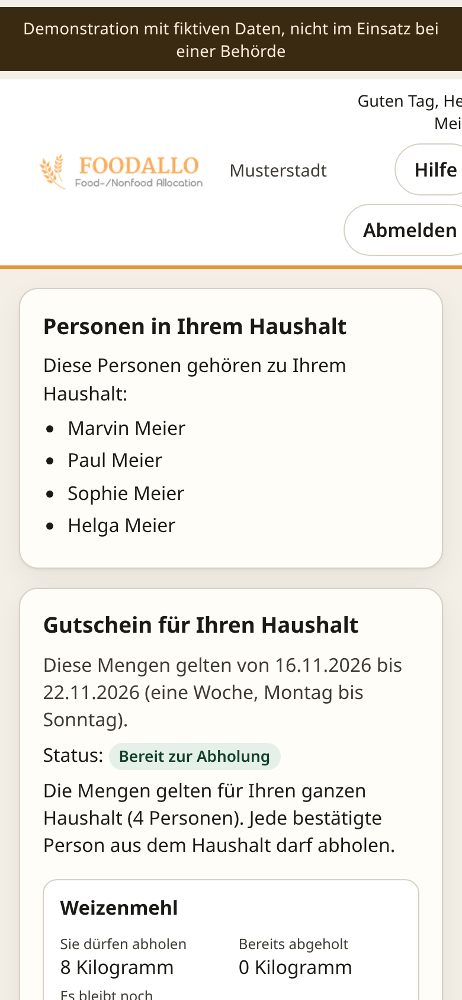

FoodAllo – Beta System
Eine Regel – auf dem Handy, an der Ladenkasse und auf Papier.
FoodAllo ist eine öffentliche Regel dafür, wer in einer Mangellage wie viel bekommt. Drei Anwendungen setzen sie um: die Customer App für Bürgerinnen und Bürger, die Retail App für Geschäfte und Apotheken und die Desktopversion für Kommune, Kreis, Land und Bund.
Demonstration mit fiktiven Daten, nicht im Einsatz bei einer Behörde
Die GrundregelZugeteilt wird das Kleinste aus Bedarf, Grundquote und Restbestand.
So läuft es ab
- AnmeldenIn der Customer App oder am Schalter der Meldebehörde.
- BestätigenDie Meldebehörde prüft die Person und stellt einen Haushaltsgutschein oder eine Papierkarte aus.
- AusgebenDas Geschäft prüft, wer abholt, und gibt höchstens die freie Menge aus.
- Bestand meldenLieferungen und Korrekturen bucht das Geschäft in der Retail App.
- ÜberblickDie Desktopversion zeigt die Bestands- und Ausgabeübersicht – ab dem Kreis nur Summen.
Papier als Rückfallebene: ohne Handy, Strom oder Netz gilt dieselbe Regel auf der gedruckten Karte.
Die drei Anwendungen

Customer App
Anmelden, Gutschein für den Haushalt sehen, wissen, was noch abgeholt werden kann und wo.
Zur Customer App →
Retail App
Gutschein oder Papierkarte prüfen, Ware ausgeben, Beleg drucken, Lieferungen und Bestand buchen.
Zur Retail App →
Desktopversion
Anmeldungen bestätigen, Papierkarten drucken und die Bestands- und Ausgabeübersicht je Ebene sehen.
Zur Desktopversion →Ohne Smartphone
Wer kein Smartphone hat, meldet sich am Schalter an. Die Meldebehörde druckt eine Lebensmittelkarte für den Haushalt. Im Geschäft wird die Kartennummer erfasst und genauso gebucht wie ein Gutschein aus der App – mit denselben Mengen.
Wer sieht was
- Einzelne Personen sieht nur die zuständige Kommune.
- Kreis, Land und Bund sehen nur Summen; kleine Zahlen unter 5 werden nicht ausgewiesen.
- Öffentlich bleiben nur Bestandsmengen – nie Lagerorte und nie, wer was bekommen hat.
- Kommune
- Kreis
- Land
- Bund
Die Regel selbst ausprobieren
Wie die Regel im Vergleich zu „wer zuerst kommt“ wirkt, zeigt die bestehende FoodAllo-Seite.